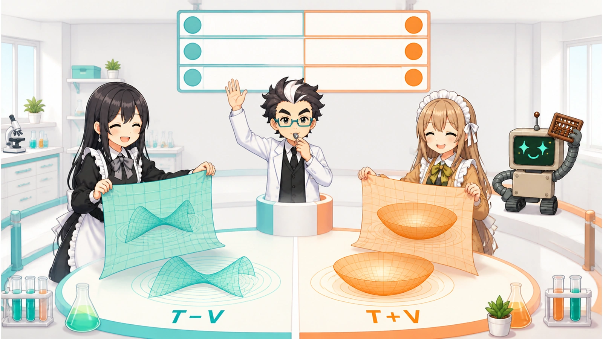
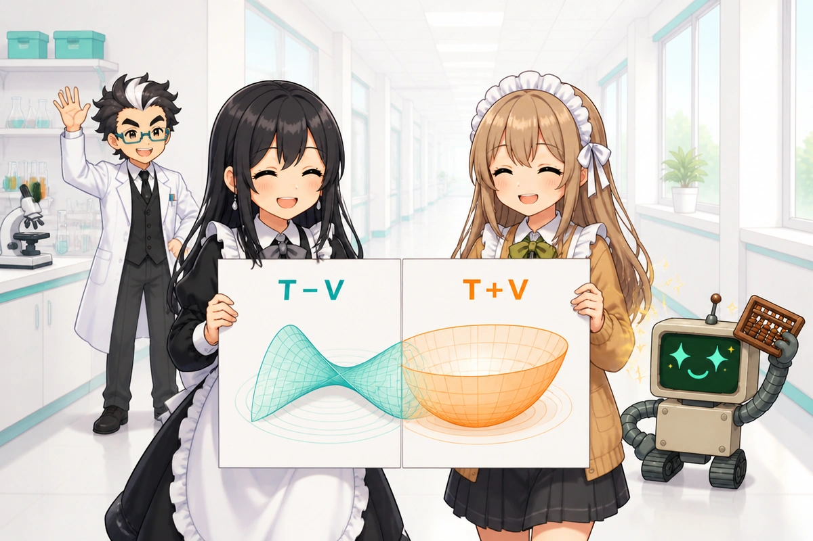

박사마지막이다. 두 지도를 신경망이 배우는 방을 지나면 대결이다.

시아드디어 대결이에요!

모아지는 쪽이 비교 카드 정리하기예요.

⑦편 · 방 22 + 대결두 지도를 배우는 신경망을 보고, 시아(라그랑지안 팀)와 모아(해밀토니안 팀)가 세 판을 겨룹니다.
코드·수식을 몰라도 됩니다. 식은 조수 상자 안에만 있습니다.
법칙을 외우는 대신 H나 L을 배운다

말로 먼저 — 신경망이 다음 위치를 바로 외우는 대신 에너지(H나 L)를 배웁니다. 움직임은 식이 계산하니 에너지가 지켜집니다.
학교 수학으로 보면 — 합성함수, 미분
| 식 조각 | 뜻 |
|---|---|
| HNN | 해밀토니안 신경망: 신경망이 H(q, p)를 배움 (Greydanus 외, 2019) |
| LNN | 라그랑지안 신경망: 신경망이 L(q, v)를 배움 (Cranmer 외, 2020) |
| 해밀턴 식 | 배운 H에서 움직임을 계산(7번 방) |
| 오일러–라그랑주 식 | 배운 L에서 움직임을 계산(3번 방) |

물리 공식을 외우는 대신 에너지 보존 하나를 이해한 학생과 같습니다.
물리 정보를 담은 신경망(physics-informed) 계열입니다. LNN은 운동량을 몰라도 위치·속도만으로 배울 수 있고, HNN은 에너지 보존이 구조에 들어 있습니다.


에너지를 안 지키는 예측은 원이 소용돌이처럼 퍼집니다. 13번 방의 오일러 걸음과 같은 모습입니다.
H를 배우고 해밀턴 식(리프프로그)으로 걸으면 원이 지켜집니다. HNN·LNN이 노리는 성질입니다.
AI의 답 신경망이 진자의 1,000걸음 뒤를 예측했는데, 흔들림 폭이 처음의 3배로 커졌습니다.
확인할 질문 바깥에서 힘을 넣지 않았다면 에너지가 늘어날 수 있나요?
늘 수 없습니다. 에너지를 지키지 않는 예측이라는 신호입니다. HNN처럼 에너지를 배우게 하거나 걸음법을 바꿔야 합니다.
심판: 조수 하루 · 시아(라그랑지안 팀) vs 모아(해밀토니안 팀) · 세 판


1판 용수철 궤적 예측: 시아는 점수가 멈추는 길(3번 방), 모아는 해밀턴 화살표(7번 방)로 풀었습니다. 둘 다 위치 = cos t로 같은 답입니다. 무승부.
2판 황금률(15번 방): "소비 + 유지비 = 생산" 울타리 하나에 λ만 붙이면 끝납니다. 시아가 한 줄로 저축률 1/3을 냈습니다. 시아 승.
3판 1,000걸음 시뮬레이션에서 에너지 지키기(13번 방): 모아는 해밀턴 식을 리프프로그로 걸어 에너지를 지켰고, 시아는 같은 걸음 수를 단순 오일러 계산으로 걸어 에너지가 크게 불었습니다. 모아 승.
📝 심판 덧붙임 — 3판의 차이는 지도 탓이 아니라 걸음법 탓입니다. 라그랑지안 쪽에도 에너지를 잘 지키는 걸음법(변분 적분법)이 있습니다. 이번 판은 "오일러 vs 리프프로그" 승부였습니다.


| 라그랑지안 (시아 팀) | 해밀토니안 (모아 팀) | |
|---|---|---|
| 식 | T − V (차이) | T + V (합) |
| 쓰는 축 | 위치·속도 | 위치·운동량 |
| 보는 방식 | 길 전체의 점수(작용) | 지금 이 순간의 화살표 |
| 식 모양 | 2차 미분방정식 n개 | 1차 미분방정식 2n개 |
| 잘하는 일 | 조건 넣기, 좌표 바꾸기, 대칭 찾기 | 에너지 지키기, 긴 시뮬레이션, 양자역학 |
| 머신러닝 | SVM 쌍대, 안전 강화학습의 λ, RLHF 거리 벌점, LNN | 모멘텀, HMC·확산 모델, 역전파의 그림자 가격, HNN |
| 경제학 | 솔로우 황금률·중첩세대, λ | 램지·투자 q 이론, μ·q |
| 양자 | 경로적분(파인먼) — 모든 길의 작용을 더한다 | 연산자·변분 원리·양자 어닐링 |


이 페이지에 나온 방과 개념을 모았습니다. 검색하고, "설명 보러 가기"로 본문에 돌아갑니다.
지식 색인을 출처와 함께 파일로 내려받습니다. Zotero(BibTeX·RIS), Protégé(Turtle), Neo4j·Gephi(CSV), 여러 페이지 합치기(kg.json)에 씁니다.